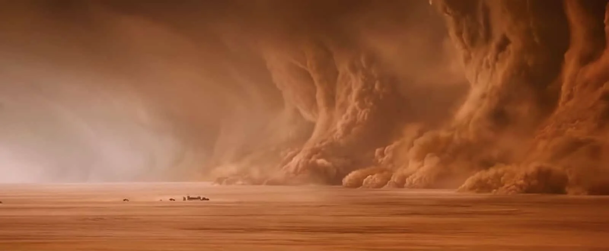
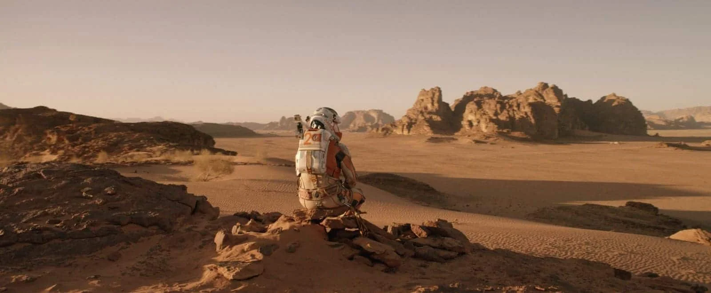
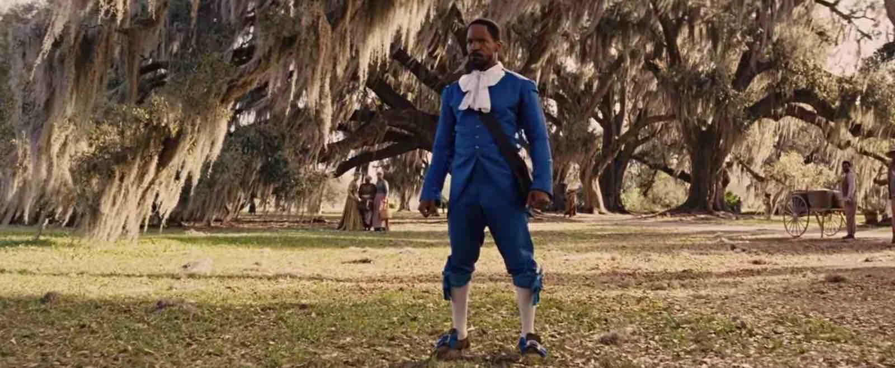
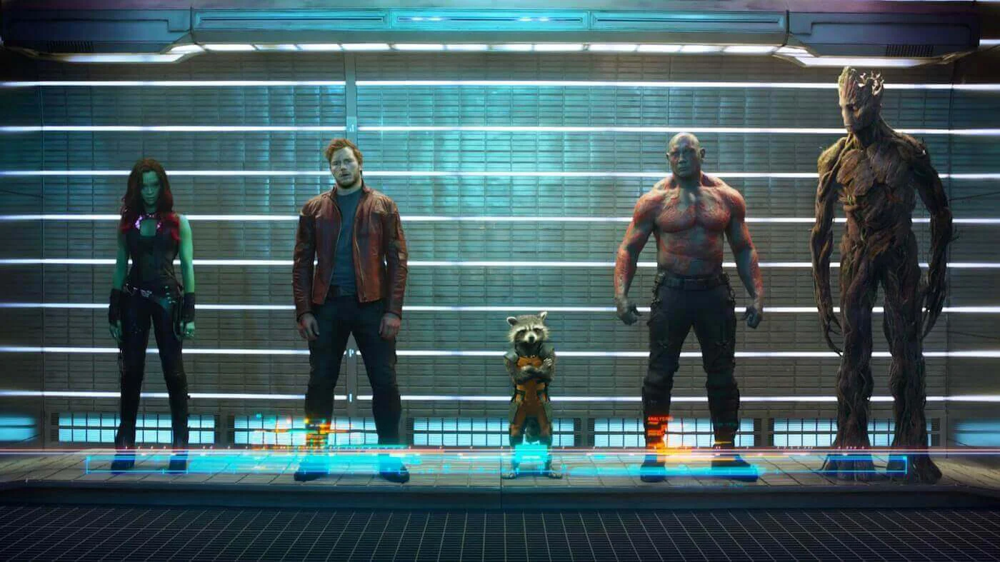

What is a camera shot?
A camera shot is composed of the series of frames that are shot uninterrupted from the moment the camera starts rolling until it stops. Camera shots are an essential aspect of filmmaking and video productions, because by combining different types of shots, angles and camera movements, the filmmakers are able to emphasize specific emotions, ideas and movement for each scene.1. Extreme Long Shot (ELS) or Extreme Wide Shot (EWS)
An extreme long shot (or extreme wide shot) make your subject appear small against their location. You can use an extreme long shot to make your subject feel distant or unfamiliar. Take a look at this extreme wide shot from one of the best action movies Mad Max: Fury Road:

2. Long Shot (LS) or Wide Shot (WS)
The long shot (also known as a wide shot, abbreviated “WS”) is the same idea, but a bit closer. If your subject is a person then his or her whole body will be in view — but not filling the shot. Here's an example of the wide shot size from one of the best 2015 movies The Martian:

In other words, there should be a good deal of space above and below your subject. Use a long shot (or wide shot) to keep your subject in plain view amidst grander surroundings.
The wide shot also lets us see the beautiful background imagery, as well as the onlookers which will make any big moment more cinematic.
Of the many camera shots, a long shot gives us a better idea of the scene setting, and gives us a better idea of how the character fits into the area.
3. Full Shot (FS)
Now let's talk about camera shots that let your subject fill the frame while keeping emphasis on scenery.

This full shot from one of the best Quentin Tarantino movies Django Unchained is also a tracking shot — meaning there is camera movement featured throughout the shot. In this particular case, the camera slowly moves (or tracks) towards Django. So, technically, this shot begins in a wide shot, moves to full shot (seen above), and eventually ends in a cowboy shot. Of all the different types of camera shots in film, full shots can be used to feature multiple characters in a single shot, like this full shot size example from Marvel's Guardians of the Galaxy: 
Tags
Related Articles